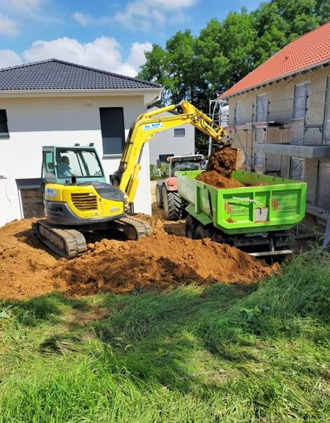
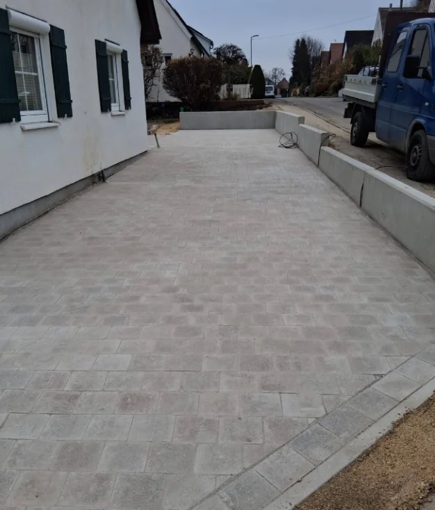
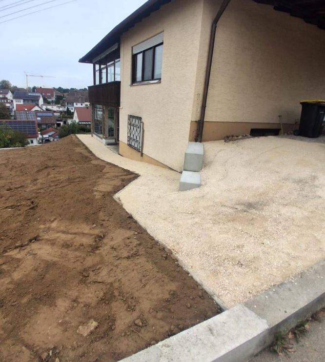

Für Haus, Hof und Garten.
Familienbetrieb aus Freihalden bei Jettingen-Scheppach. Wir übernehmen Erd-, Bagger- und Pflasterarbeiten, größere Gartenprojekte und Transporte, mit eigenen Maschinen und über 35 Jahren Erfahrung im Baugeschäft.
Was wir für Sie machen
{{ tabIntro }}
Was unsere Kunden sagen
5,0 Alle Bewertungen auf Google
Die Firma Helmut Heiligmann hat unseren Gartenumbau übernommen. Im abfallenden Gelände waren mit dem Bagger, Winkelsteine in mehreren Terrassen zu setzen. Alle Arbeiten wurden absolut genau, sauber und zügig ausgeführt. Eine ausgezeichnete und vor allem zuverlässige Firma, die ich guten Gewissens weiterempfehlen kann.

Wir haben unsere Einfahrt und den Eingangsbereich neu machen lassen ! Alles zu unserer vollsten Zufriedenheit- in unser Haus kommt man jetzt barrierefrei, die zuvor bestehenden Ebenen sind Geschichte- und alles in Ultra- Geschwindigkeit gepflastert bzw " geebnet" Ein super nettes Team- mit genialen Ideen , die den Alltag leichter machen. Eine Firma ,die wir zu 100% empfehlen können!!! Danke nochmal aufs Herzlichste!!

Schnelle und saubere Arbeit. Immer Kontakt bei irgendwelchen Veränderungen. Gute Zusammenarbeit. Fähre Preise. Gerne wieder👍
Bewertungen von Google, im Originalwortlaut und in Originalschreibweise übernommen.
Unsere Bereiche
Erdarbeiten, Landwirtschaft und Angusrinder, alles aus einem Familienbetrieb in Freihalden.
Erd- & Baggerarbeiten
Nach mehr als 35 Jahren im Baugeschäft kennen wir uns bestens auf diesem Gebiet aus. Mit viel Erfahrung, ordentlicher Arbeit und Schnelligkeit möchten wir alle Beteiligten zufriedenstellen.
Unsere Leistungen umfassen Erd-, Pflaster-, Bagger- und Gartenarbeiten.
Zu den ErdarbeitenBallen ab Hof
Von unseren eigenen Feldern, in Bio-Qualität. Abholen in Freihalden, Oberfeldstraße 15.
Unsere Angus-Herde
In Freihalden leben unsere Angusrinder die meiste Zeit des Jahres im Freien auf der Weide. Die Kälber wachsen bei ihrer Mutter in der Herde auf.
Gefüttert werden sie mit Gras sowie eigenem Heu und Grassilage in Bio-Qualität.
Zur HerdeUnsere Maschinen
Was steht an?
Rufen Sie an oder schreiben Sie kurz, worum es geht. Wir melden uns mit einem Angebot.
0162 3478127